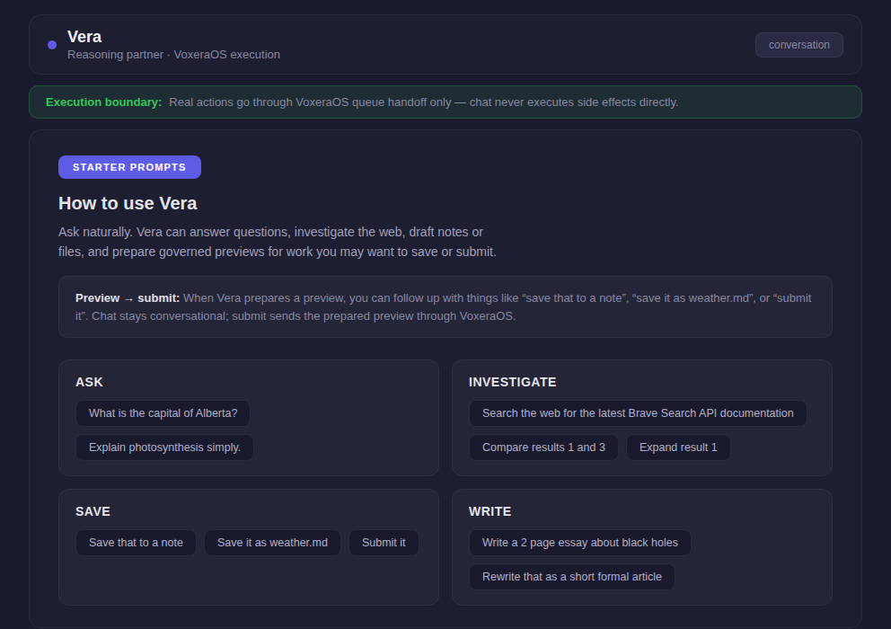
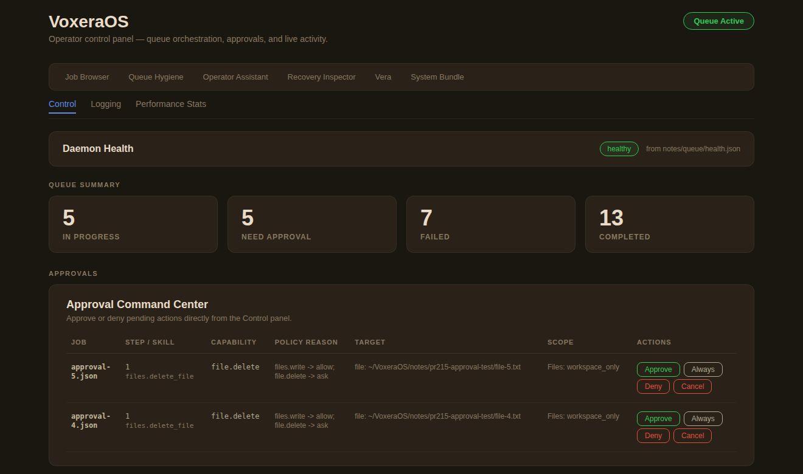

Vera converses and plans
Vera is the conversational surface. She helps you think, investigate, shape intent, and prepare governed requests — but she cannot directly mutate the system.
VoxeraOS is an open-source governed execution layer for AI — still alpha, built intentionally.
Vera handles conversational reasoning and planning. Real actions pass through VoxeraOS: policy-checked, approval-gated, artifact-backed.
A one-person evenings/weekends project. Real framework, real end-to-end demo, still evolving.
Real system, real execution
What you see below is actual runtime behavior — Vera preparing governed actions, VoxeraOS executing through queue, approvals, and artifacts.


Why Voxera exists
Most AI systems connect reasoning directly to execution: LLM → tool call. That's powerful, but hard to trust. VoxeraOS introduces the boundary between the two.
Vera is the conversational surface. She helps you think, investigate, shape intent, and prepare governed requests — but she cannot directly mutate the system.
Every side-effecting action passes through the VoxeraOS queue runtime — evaluated against policy, approval-gated if required, and executed with a full artifact record.
Jobs produce evidence artifacts: what was requested, what policy allowed, what executed, and what the outcome was. You can prove exactly what happened and why.
How it works
Every governed action follows the same path through the queue. No shortcuts, no surprises.
The queue is the execution boundary
Natural language becomes a durable queue job. Jobs move through an explicit lifecycle. Every governed action produces evidence.
Intent becomes a queue job with an explicit lifecycle: inbox → pending → approval → running → done. Each state transition is tracked and recoverable.
When a job requires approval, execution stops. The job waits in pending approvals until an operator explicitly allows it. Nothing advances on its own.
Every completed job produces evidence: the plan, what policy allowed, what executed, and the outcome. Provable. Inspectable. Permanent.
Architecture
VoxeraOS separates the conversational assistant from the governed execution runtime. They are deliberately different things.
Vera converses, investigates, plans, and prepares governed handoffs. She shapes intent and explains results. She does not directly execute side-effecting system actions.
The durable queue runtime that evaluates requests against policy, pauses for approval when required, executes jobs, and produces artifact-backed evidence of every outcome.
Ubuntu, Fedora, or any distribution. VoxeraOS runs alongside it — never replacing your system foundations.
Built on
Progress · v0.1.8
Stability before scale. Operator trust before expanding capabilities. This is open-source alpha — built intentionally, iterated openly.
Durable queue lifecycle, approval gates, artifact-backed outcomes, operator panel, baseline recovery, and the most stable Vera so far. Available now on GitHub.
Richer recovery inspection, degradation-aware runtime, and broader operator tooling. Broad direction — details will evolve.
Voice loop, signed skills, and platform expansion. These are directional — the specifics will be shaped by what the project learns along the way.
The story so far
VoxeraOS started as a proof of concept — one person, evenings and weekends, exploring what's missing from AI systems today. It's now an open-source alpha with a real framework and working end-to-end demo. v0.1.8 is working alpha software, not a finished platform. Some implementations are still rough around the edges.
The first versions tested a single idea: can AI execution be governed by default, with boundaries that hold? That question became a working system.
This is a one-person project built in personal time. That shapes the pace — deliberate, focused, and honest about what's ready and what isn't.
The framework works. The end-to-end demo is real. Many things will change over time. Try it, inspect it, report back — contributions and feedback are welcome.
Open source · provider support
VoxeraOS is open source and available on GitHub. The repo is the product — inspect it, run it, build on it. Here's what's tested and where things stand with provider support.
The full codebase is public. Transparency, inspectability, and collaboration are how governed AI software should be built. Clone it, read it, try it.
OpenRouter is the only officially tested and fully built provider path so far. Gemini 3 Flash is the current minimum supported requirement. Other OpenRouter brains may work — try them and report back.
This is alpha software from a one-person project. Some implementations are still rough around the edges. Some choices are transitional and will change. That's the honest state of things.
Why this exists
This project is grounded in present-day gaps in AI systems: trust, review, execution boundaries, and proof of outcome. Not speculative hype — concrete problems that need solving now.
Trust comes from structural limits on what AI can do without permission — not from personality, tone, or reassurance.
Every governed action should produce proof: what was requested, what was allowed, what ran, and what resulted. No black boxes.
The person running the system should always be in charge. Approval gates, policy boundaries, and clear audit trails make that real.
VoxeraOS is open source and available on GitHub right now. Clone the repo, follow the README, and run your first governed job in minutes. Feedback, issues, and contributions are welcome.
Open-source alpha · one-person project · still evolving